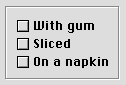
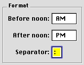
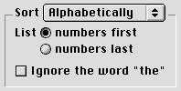
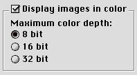
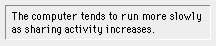

Group Boxes
Group boxes are used to associate, isolate, and distinguish groups of related items in a dialog box. You can embed other controls, such as radio buttons, checkboxes, and pop-up menu buttons, within group boxes.Group boxes are defined as either primary or secondary. The main visual distinction between the two types is their borders; primary group box border lines are two pixels wide with an etched look, while secondary group box borders are one pixel wide.
You can use any of four titling options for the border of a group box: the group box can be untitled or it can have a text title, a pop-up menu title, or a checkbox title. Figure 2-37 shows an untitled primary group box.
Figure 2-37 An untitled primary group box

Figure 2-38 shows a titled primary group box.
Figure 2-38 A titled primary group box

Figure 2-39 shows a primary group box using a pop-up menu title. This is useful for displaying a variety of related settings in a limited space.
Figure 2-39 A primary group box with a pop-up menu title

Figure 2-40 shows a primary group box with a checkbox title. This is useful to indicate when a group of settings may be disabled by the user.
Figure 2-40 A primary group box with a checkbox title

Secondary group boxes are generally used for nesting and grouping together subsidiary information. Do not use secondary group boxes in place of primary ones; this produces inconsistent dialog box appearances which confuse users. Figure 2-41 shows a secondary group box. Note the difference in the border as compared to a primary group box.
Figure 2-41 A secondary group box

For more information on laying out group boxes, see "Group Box Layout" (page 76).